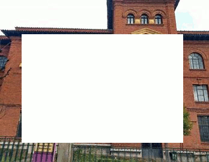
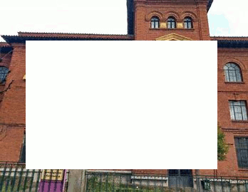
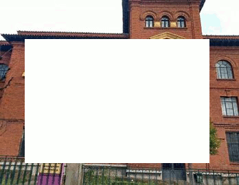

Esta es mi página web sobre el instituto IES Claudio Sanchez Albornoz.

La historia de este edificio se remonta a 1928 cuando comienza a elaborarse su proyecto de construcción “con destino a la Escuela Normal de León… en terrenos cedidos por el Ayuntamiento y la Diputación”. Pero no es hasta octubre de 1931 cuando comienzan las obras, terminándose éstas en diciembre de 1934.
Tras haberse equipado completamente estalla la guerra en 1936 y el edificio es destinado a otros usos, siendo ocupado por el Grupo de Cazas de la Legión Cóndor. Una vez que la Legión Cóndor abandonó el edificio se cede éste, con muebles y utensilios, a la Delegación de Frentes y Hospitales para instalar un hospital de guerra.
En marzo de 1940 la Normal consigue que se le devuelva el piso de arriba de la escuela y que la Diputación pague los gastos de desinfección. En diciembre de 1942 se recupera otra planta del edificio y ese mismo año se instala en él una escuela de capataces de minas, conviviendo entonces los estudiantes de magisterio con los de minas, con el hospital y con el Frente de Juventudes. Finalmente, en 1954, se desocupa el edificio pasando su uso exclusivo a la Escuela Normal. Y así habría de serlo hasta 1989, en que la Escuela Normal se traslada a una nueva ubicación en el Campus Universitario.
A partir de este año -1989- se crea por desdoble del Politécnico de León, el Instituto de Formación Profesional Número 2, adquiriendo rápidamente la configuración como Instituto de Educación Secundaria , que pasa a denominarse, por decisión del centro, Claudio Sánchez Albornoz nombrado hijo adoptivo de León, por sus aportaciones al conocimiento de la historia del Reino de León.
A continuación habrá un calendario en el que se muestran las festvidades , examenes y excursiones